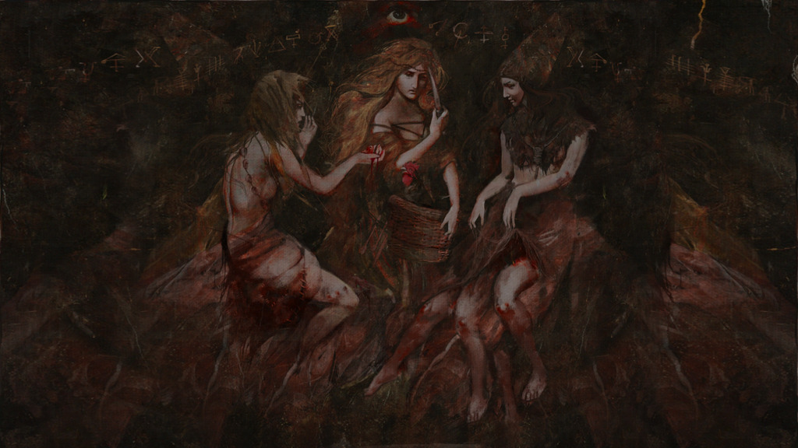

- waisenhaus in arkenwoods, unter hütte der alten gran
- hütte der alten gran: tür nach hinten, holztür nach unten: raum mit schrein, gemälde , knochengebilden an der decke (kleine knochen, so vögel), viele kerzen, vor gemälde am boden in roter farbe: dreieck mit kreis herum
- gran greift an gemälde, channelt dann drei verschiedene stimmen:
- von "alter" hinters licht geführt, "alte" ist grund allen übels im sumpf
- baum im sumpf, nordwestlich, herzschlag spüren wenn wir näher kommen, folgt den knochen, dort wo die wölfe wachen, verdorbenes herz durchstechen
- namen: flüsterin, schreier, singend
- herz im baum von einer "alten bekanntschaft"
Von Sora (Exwaisenkind)
- vor 10 jahren änderung, davor waisenhaus gut
- "alte geschichten der wälder" buch:
- legende der alten, liebenden mutter, geflügeltes pferd ohne flügel (gekappt), schwarz: Lyssandra
- lysandra, gebar drika + estaka + tuliase, übersetzt: geflüster, geschrei, gesang
- töchter widersetzten sich mutter und verbannten sie
- töchter dabei auch selbst verbannt
- in hass zerstritten, in ewiges unheil gestürtzt
dryade sagt:
- schauerliche kreaturen
- verbannt, sollen dort bleiben
- herz des waldes ist ein dunkler ort, eher ein tumor
- dryade bestätigt 3 schwester + mutter gegenseite verbannung
- herz zerstören = schwestern befreien, wäre furchtbar
- waren herrinen der sümpfe, hexen, mit dunklen mächten im bund
- verdebnis im sumpf,
- sümpfen waren mal teil der arkenwoods, dryade weiß nicht warum sümpfe entstanden
Prophezeiung von Gah'We
- Ein weiteres tragisches Schicksal verbreitet sich in diesen Landen. Ein alter Fluch, zersetzt das Land und durchdringt es mit seinem widerlichen Blut. Die drei blutsverbundenen Jungfrauen von Roth, sie sind ihrem Gefängnis entkommen.
- Ihr Schrecken verbreitet sich wie eine Seuche durch das Land, das manifestierte Leid, das in der Erde seine Wurzeln schlägt. Die Strafe für alles Gerechte auf dieser Welt.
- Auch wenn es das kleinere der großen Übel ist, so ist es doch ein Geschwür, dass das Große in die Knie zu zwingen vermag.
- Ihr Blut breitet sich aus. Stoppt es an der Quelle.
Blutbäume
- wir finden im Osten von Port Ellyna den ersten Blutbaum
- ist vielleicht ein vormals normaler (zumindest hölzerner Kern) Baum, der aber außen mit Fleisch eingehüllt ist, wie ein Körper
- von außen wie zerschnittene Haut, schaut von Ferne aus wie helle Rinde mit roten Strichen
- der Baum kann Bluttentakeln aus dem Boden erschaffen, die relativ hart zuschlagen, max-hp reducen und auto-grappeln
- der Baum kann wohl ein untotes Monster aus zusammengesetzten Knochen und Fleischteilen erschaffen und für sich kämpfen lassen
- vom Baum geht Magie aus: dunkel, sehr nekromantisch, aber noch etwas mehr
- Baum peitscht 20 ft um sich
- Baum ist mit roter Ader mit anderen verbunden
- wir erfahren von RIana, dass das Netzwerk mindestens bis nach Gwydur geht und im Gwydur-Wald so viele sind, dass die dortigen Waldelfen noch nicht alle nachverfolgen konnten